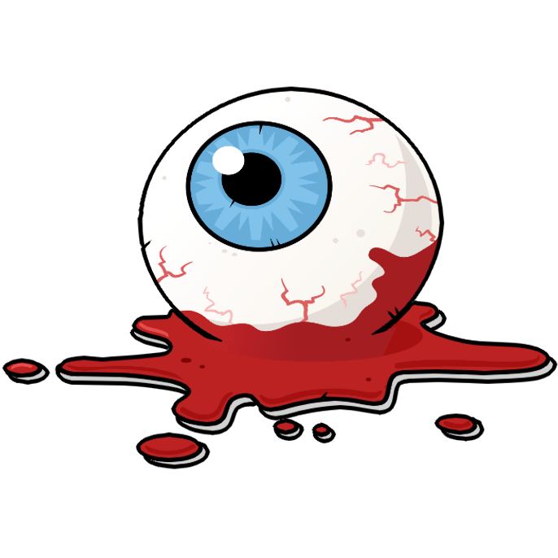
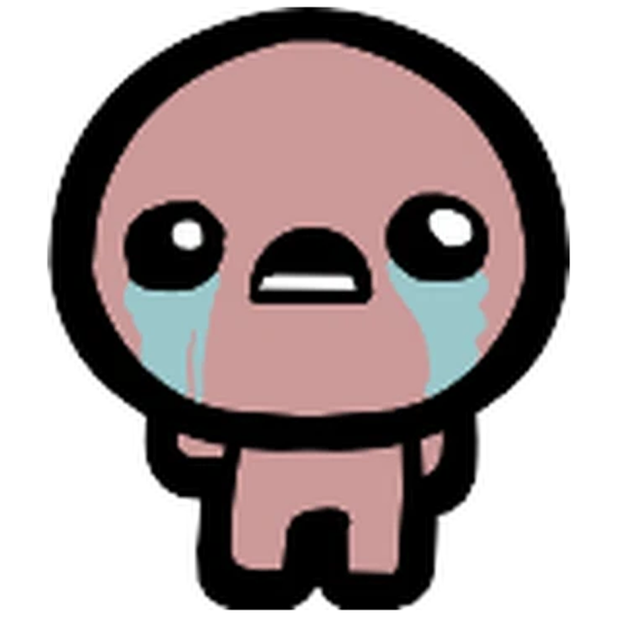
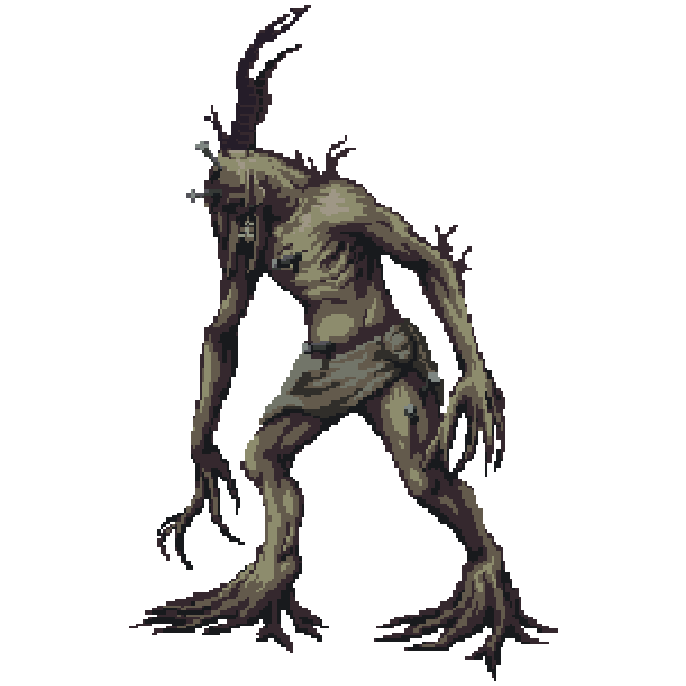
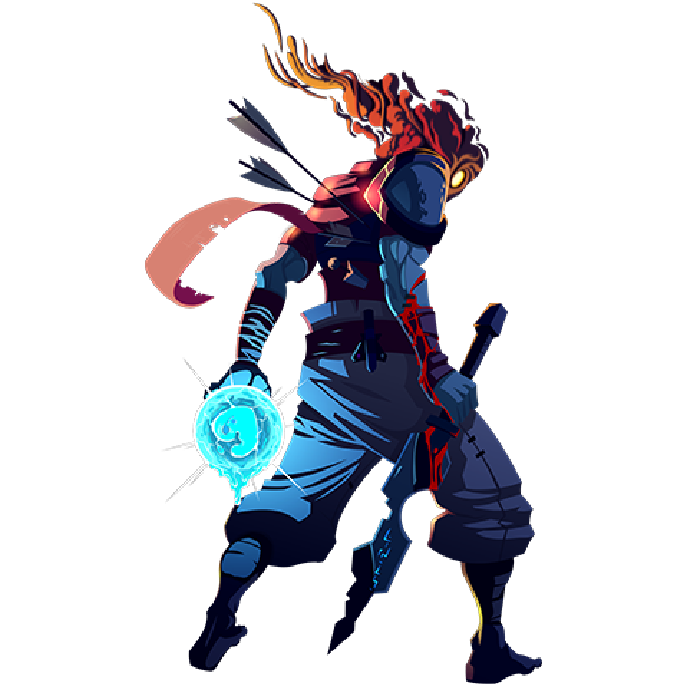

Aun no lo e jugado
Hollow Knight
Terraria
Terraria, en mis propias palabras, es un juego de aventura y batallas. Mucha gente dice que es puro farm o incluso una copia de "Minecraft", pero no es cierto (al menos que te lo quieras platinar, entonces sí es un juego de puro farm). Tiene un soundtrack bellísimo, es tan hermoso y para mí, nostálgico. La construcción es muy variada, puedes crear casas, monumentos, pixel arts, etc.

The Binding of Isaac

cocaina
Blasphemous
cocaina

Dead Cells

cocaina